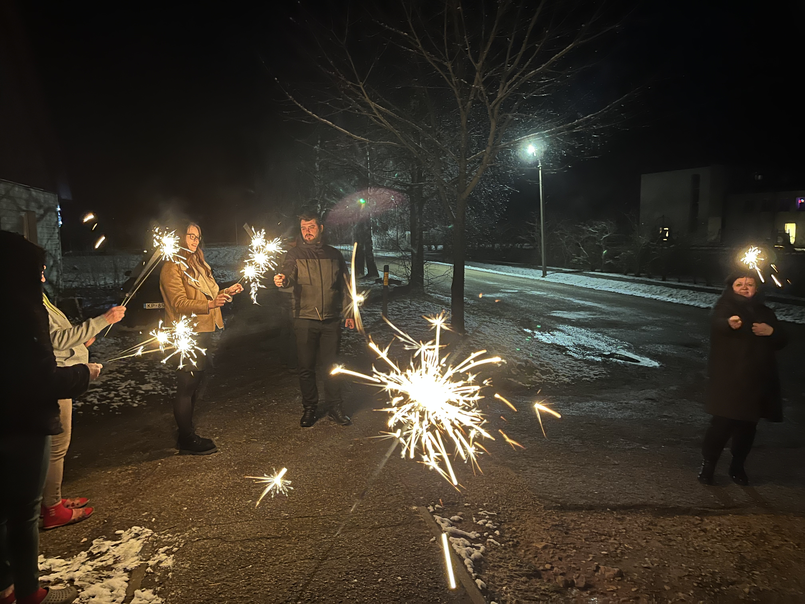

Jaunajā gadā ģimene pulcējas kopā, sagaida pusnakti ar salūtu un nereti veic laimes liešanu. Svētku galds ir bagātīgs ar uzkodām, salātiem, desertiem un dzirkstošiem dzērieniem. Fonā skan jautra, svinīga mūzika, kas aicina dejot un svinēt līdz vēlai naktij.